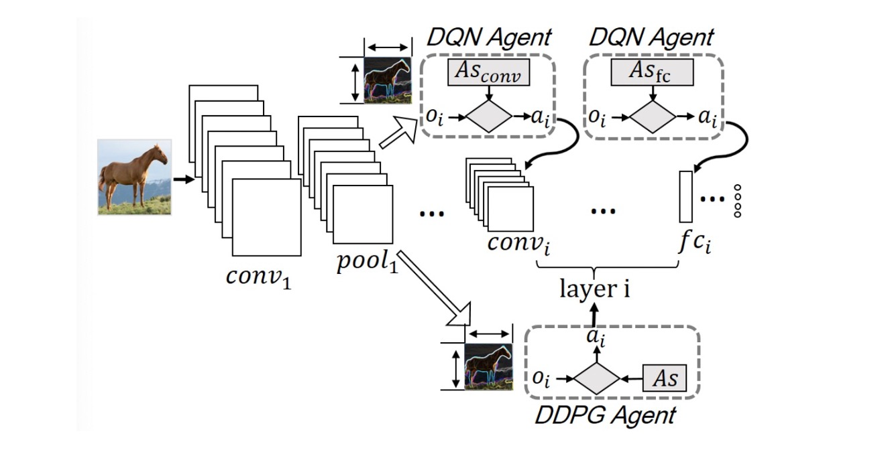

Sicong Liu
I'm currently an associate professor in the School of Computer Science at Northwestern Polytechnical University (NWPU). I work in the CrowdHMI Lab of NWPU, under the leadership of Prof. Zhiwen Yu. And I'm doing two-years postdoc at NWPU, collaborating with Prof. Bin Guo on deep learning in AIoT, crowd computing for Human-Machine-IoT. Before joining NWPU, I received my Ph.D. degree from Xidian University, China, in 2020, supervied by Prof. Junzhao Du. And I had an experience as a visiting scholar at Rice University from 2017 to 2018, under the supervision of Prof. Lin Zhong.